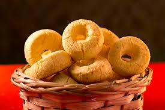

Biscoito de queijo

Ingredientes
- 4 copos de polvilho (copo de requeijão ou xicara de chá é a mesma medida)
- 1 copo de leite gelado
- 1 copo de óleo (faltando 2 dedos para cheio)
- 3 copos de queijo ralado
- 3 ovos
- sal a gosto
Modo de preparo (30 min)
- Molhe o polvilho com o leite gelado, amasse com as mãos até ficar soltinho.
- Esquente bem o óleo e coloque no polvilho já molhado com o leite gelado, amassando. Coloque o queijo e os ovos e e amasse bem até ficar firme e depois é só enrolar. Colocar sal apenas se necessário, deixe por último, as vezes o sal do queijo é suficiente.
- Levar ao forno preaquecido, até dourar um pouco. Não deixe muito se não fica duro.